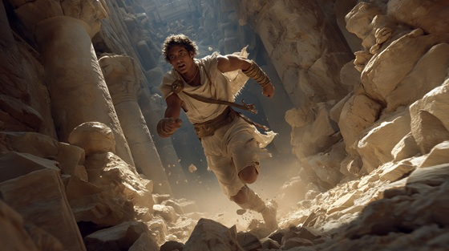

After slaying the Minotaur, Theseus had to find his way out of the twisting Labyrinth.
Using Ariadne’s golden thread, he retraced his steps — racing against fear, time, and the hungry, living walls of stone.
"Escape Through the Thread" captures the frantic energy and heroic will that saved Theseus from vanishing forever into the maze’s endless dark.
Escape Through the Thread
The beast lies slain, the silence breaks
The walls still breathe, the stone still aches
The thread still burns, the way still winds—
I chase the light through death and time
No monster left, but death still waits—
The maze still hungers at the gates
Escape through the thread, tear through the dark
Run through the storm, ride through the spark
No wall, no fear, no cursed breath—
The thread shall carve my flight from death
The walls close in, the echoes scream
The thread pulls tight, a dying dream
But hand by hand, and breath by breath—
I climb the ropes of life through death
No gods shall reach, no tyrant bind—
The thread shall free this hunted mind
Escape through the thread, tear through the dark
Run through the storm, ride through the spark
No wall, no fear, no cursed breath—
The thread shall carve my flight from death
The door draws near, the night grows thin
The thread still sings beneath my skin
One final breath, one final cry—
I break the maze and kiss the sky
Thread of light, heart of flame
Drag me out of death’s own name
Stone and blood may cry and break—
But through the thread, my soul shall wake
Escape through the thread, tear through the dark
Run through the storm, ride through the spark
The beast is dead, the maze is torn—
The hero rides the breaking dawn
Thread of gold, thread of fire—
I break the maze and climb the pyre